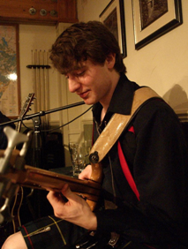

Alisdair MacLeod

From: Falkland, Fife, Scotland, UK
Qualifications:
Postgraduate study: Started October 2010
Project:
Osteoporosis is a current epidemic in western societies and the healthcare burden associated with managing osteoporotic fractures is increasing. Fixation devices that perform well in healthy bone may not in weaker bone; however, there are still no gold standards for fixation taking into account the patient's level of osteoporosis. This project will benefit osteoporotic patients directly; by ensuring an optimum configuration is used to suit their bone quality with the aim of increasing comfort and lowering morbidity related to the implants.
Supervisors: Dr. Pankaj Pankaj and Prof. Hamish Simpson
Research Interests:
Awards and Other Interests:
Previous Projects:
Contact: a.macleod(at)ed.ac.uk